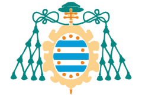

Trayectoria
Universitat de València - Grau en Matemàtiques
Empecé la vida universitaria en la UV, donde mi tutor de bachillerato me engatusó para que estudiase el grado de matemáticas (él era matemático). Aunque la abandoné antes de terminar segundo, valoro mucho tanto lo aprendido, como la perspectiva de pensamiento matemático tan diferente del "memoriza y regurjita" de la PAU.
Universitat Politècnica de València - Grau en Informàtica
Tras abandonar el mundo infinito de los números, los sustituí por simples 0s y 1s. En los 4 años de carrera descubrí como funiconaba la "caja májica" que usaba todas las tardes para viciarme al Lol. También descubrí que cuanto más me alejase del hardware mejor para mi. Realicé la rama de "Ingenieria Software" para alejarme tanto de lo físico como de los sistemas, yo quería programar código y que me dejasen en paz.

Universidad de Oviedo - Máster en Ingeniería Web
Actualmente estoy cursando el máster de Ingeniería Web, del cual aún no puedo opinar, pues apenas llevo 2 semanas en él. Pero la oportunidad de aprender fuera de mi tierra y conocer gente nueva es una experiencia que estaba deseando vivir.